1.Быстрый старт
- Откройте приложение. Без установки — адрес dev-сервера (
npm run dev→http://localhost:5173) или опубликованная HTTPS-страница. - Выберите источник. Demo — синтетическая сальса с известным темпом, начать лучше с него. Микрофон — музыка вокруг. Файл — запись с устройства.
- Нажмите Старт (для файла — Выбрать аудиофайл).
- Подождите 6–10 секунд. В режимах «Микрофон» и «Файл» приложение ищет темп; пока идёт поиск, вместо BPM написано «поиск темпа…».
- Поставьте «1». Если стрелка проходит «1» не там, где в музыке начинается восьмёрка, нажмите Здесь «1» точно в момент счёта «раз».
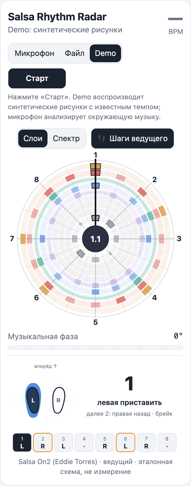
2.Экран приложения
На телефоне всё расположено в одну колонку, на компьютере — в две. Главная карточка с циферблатом на компьютере закреплена: настройки можно прокручивать, а циферблат остаётся на виду.
| Область | Что там |
|---|---|
| Заголовок | Название, текущий источник, крупное значение BPM и пояснение: уверенность, «эталонный темп Demo» или «задан вручную» |
| Источник и Старт/Стоп | Переключатель Микрофон / Файл / Demo и главная кнопка |
| Слои / Спектр | Два вида циферблата: кольца рисунков или полярная спектрограмма |
| Циферблат | Восемь счетов, вращающаяся стрелка, в центре — текущий счёт |
| Музыкальная фаза | Положение внутри восьмёрки в градусах (полный круг = 360°) и полоса прогресса |
| Инструменты темпа | Tap, «Здесь 1», ±1 BPM, ÷2, ×2, сдвиг ¼, режим синхронизации, длина цикла |
| Слои | Список колец с переключателями и метками типа данных |
| Настройки / Диагностика | Параметры анализа и отображения, технические показатели |
3.Как читать циферблат
Время идёт по кругу. Один полный оборот — одна восьмёрка (два такта 4/4).
- Счёт «1» — сверху, время движется по часовой стрелке.
- Один счёт — 45°, восьмая («и», «&») — 22,5°, шестнадцатая — 11,25°.
- Жирные радиальные линии — счета, тонкие — восьмые, едва заметные — шестнадцатые.
Стрелка показывает текущий момент музыки. Её скорость задаёт темп, а положение — найденная (или заданная вами) фаза.
Центр показывает счёт в формате счёт.шестнадцатая: 6.1 — ровно на «шесть», 6.3 — на «шесть-и» (6&), 6.2 и 6.4 — промежуточные шестнадцатые.
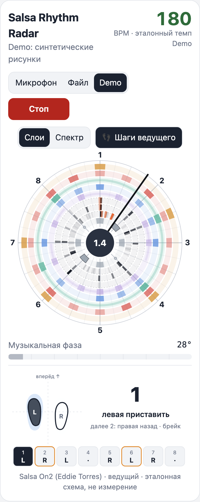
Три типа колец
Приложение никогда не смешивает то, что известно заранее, с тем, что измерено.
эталон
Цветные сегменты на бледной цветной дорожке — документированный ритмический рисунок инструмента. Это не распознанный инструмент, а образец того, как он обычно играет.
- Яркость — относительная громкость удара.
- Прозрачность — достоверность источника.
- Бледный хвост — длительность звука (бас, пианино, гуиро).
- Обводка — событие звучит прямо сейчас.
наблюдение
Монохромная тепловая полоса на пунктирной дорожке — атаки (начала звуков), найденные в записи в своём частотном диапазоне и накопленные по восьмёркам.
- Чем насыщеннее участок, тем чаще и сильнее там атаки.
- Цветные вспышки — атаки, найденные только что.
- Прозрачность кольца — уверенность синхронизации: без найденного темпа положение атак ничего не значит.
эталон танца
Серые блоки внутри — схема шагов выбранного стиля.
- L / R — левая или правая нога ведущего (если источник однозначен).
- Блок с обводкой — брейк: «1» и «5» в On1, «2» и «6» в On2.
- Кружок — пауза («4» и «8»).
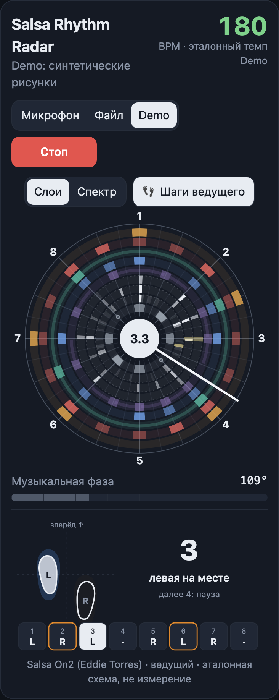
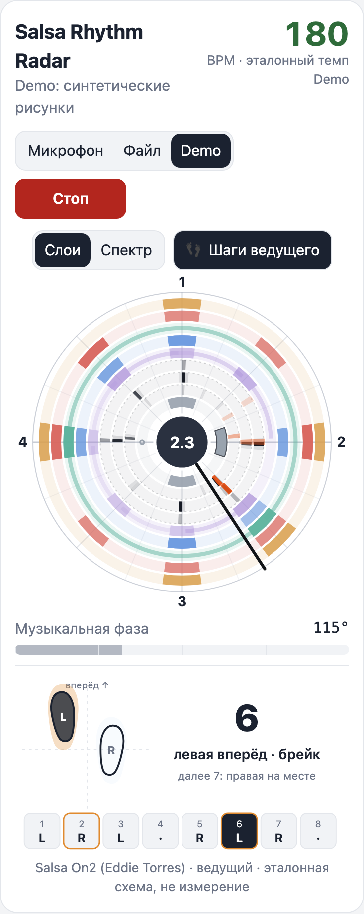
Переключатель 8 счётов / 4 счёта меняет длину оборота. В режиме 4 счётов один оборот — один такт (90° на счёт), и оба такта клаве видны на одном круге. Это удобно, чтобы сравнить «сторону 3» и «сторону 2».
Шаги ведущего
Кнопка 👣 Шаги ведущего под переключателем «Слои / Спектр» показывает под циферблатом вид сверху на стопы ведущего в выбранной схеме. По умолчанию это Salsa On2 (Eddie Torres).
- Стопа заранее движется к месту шага и приземляется точно на счёт. В момент постановки она вспыхивает (синим для шага, оранжевым для брейка) и плавно гаснет.
- Закрашенная стопа несёт вес, контурная свободна.
- Справа — номер счёта, текущее действие («правая назад · брейк») и следующий шаг.
- Внизу — восемь счётов с ногами: брейки обведены, текущий счёт подсвечен, «·» — пауза.
ET On2 для ведущего: 1 — левая приставить, 2 — правая назад (брейк), 3 — левая на месте, 4 — пауза, 5 — правая приставить, 6 — левая вперёд (брейк), 7 — правая на месте, 8 — пауза. Партнёрша зеркально.
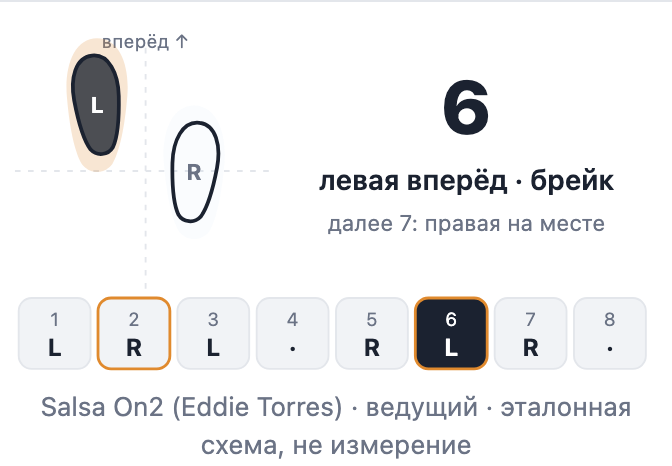
4.Источники звука
Demo
Синтетическая сальса, которую приложение генерирует само. Темп и положение каждого удара известны точно, поэтому Demo годится и для обучения, и для проверки анализа.
- Звучат видимые эталонные слои. Включите в списке только клаве — услышите только клаве; включите конгу и бас — услышите их вместе.
- Темп — в Настройках → Demo → Темп (80–240 BPM). Звук перестраивается без остановки, музыкальное время продолжается непрерывно.
- В Настройках → Demo можно добавить живости: случайные временные отклонения, пропущенные удары и шум. Так проверяется, насколько анализ устойчив к живой игре.
- По умолчанию стрелка в Demo идёт по эталонному (истинному) темпу. Переключите синхронизацию на Авто, чтобы посмотреть, как справляется автоматический анализ.
Микрофон
Анализ музыки, звучащей рядом: в зале, из колонки, с другого телефона.
- Браузер спросит разрешение на микрофон — разрешите.
- Микрофон работает только на защищённой странице (HTTPS) или на
localhost. - Приложение отключает браузерное шумоподавление, эхоподавление и автоусиление: они разрушают атаки ударных.
- Положите телефон так, чтобы он хорошо слышал музыку, но не вплотную к колонке. Уровень виден в Диагностике → RMS: разумно от −35 до −10 дБFS.
- Звук микрофона не воспроизводится через динамики, поэтому эха нет.
Файл
Анализ записи с устройства: MP3, WAV, M4A, OGG — всё, что умеет проигрывать ваш браузер.
- Выберите Файл → Выбрать аудиофайл.
- Воспроизведение начинается сразу; под кнопкой появляется плеер: пауза, перемотка, время, имя файла.
- При перемотке анализ начинается заново: темп ищется повторно, накопление сбрасывается.
Чтобы сделать свой тестовый файл с известным темпом:
npm run demo-wav -- my-test.wav 172 3-2 30(темп 172, клаве 3–2, 30 секунд)
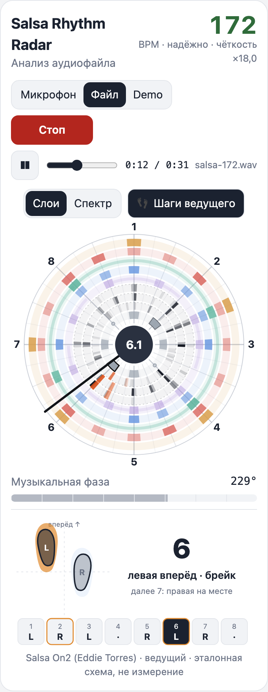
5.Темп и синхронизация
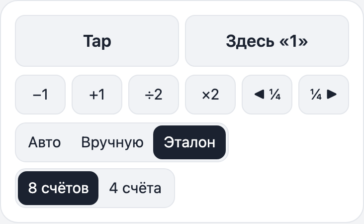
Значение BPM в заголовке
| Подпись под числом | Значение |
|---|---|
поиск темпа… | Автоматический анализ ещё не нашёл устойчивый темп (обычно 6–10 с) |
BPM · надёжно · чёткость ×8,2 | Темп найден автоматически. Чёткость — во сколько раз свёрнутый по восьмёркам ритм чётче случайного шума (1 = ритма нет). Уровень: надёжно (чёткость ≥ 6 и отрыв от второй гипотезы ≥ 1,6), вероятно (≥ 4 и ≥ 1,3), неуверенно (≥ 2,5, число жёлтым), нет ритма |
BPM · эталонный темп Demo | Стрелку ведёт истинный темп синтезатора |
BPM · задан вручную | Темп задан вами (Tap, ±1, ×2/÷2) |
Режимы синхронизации
| Режим | Кто ведёт стрелку | Когда использовать |
|---|---|---|
| Авто | Анализ: находит темп и подстраивает фазу плавно, без скачков | Микрофон и файл |
| Вручную | Вы: стрелка идёт с заданным BPM и не подстраивается | Когда автоматика ошибается или нужна фиксированная сетка |
| Эталон | Истинный темп Demo (только в Demo) | Обучение; проверка точности анализа в Диагностике |
Как приложение находит темп и «1»
Представьте ленту с записью, свёрнутую в трубку: если длина окружности равна длительности восьмёрки, удары разных восьмёрок ложатся друг на друга, и на торце проявляется рисунок. Приложение перебирает «диаметры» и выбирает тот, при котором рисунок самый чёткий одновременно на уровнях восьмёрки, такта, доли и восьмой. Так находится темп, обычно за 4 секунды.
Затем свёрнутый рисунок сравнивается со скелетом сальсы (конга-тумбао, бас-тумбао, колокол) с учётом выбранного направления клаве. Это определяет, где сильные доли (а не «и»), и где «1». Если музыка на сальсу не похожа, приложение определяет только доли.
Кнопки
| Кнопка | Действие |
|---|---|
| Tap | Отстучите 3–8 раз ровно по счётам. Темп считается по интервалам, ближайшая доля привязывается к последнему нажатию. Пауза больше 2 секунд начинает отсчёт заново. |
| Здесь «1» | Нажмите в момент счёта «раз»: циферблат плавно повернётся так, чтобы «1» оказалась на ближайшей доле. Накопленные данные поворачиваются вместе с ним и не теряются. Ручная «1» отключает автоматический поиск «1» (снова включается в настройках). |
| −1 +1 | Изменить темп на 1 BPM. |
| ÷2 ×2 | Половинный или двойной темп. В режиме Авто это ещё и переключает диапазон поиска темпа. |
| ◀ ¼ ¼ ▶ | Сдвинуть циферблат на шестнадцатую (¼ доли). Два нажатия — половина доли. |
| 8 счётов 4 счёта | Длина одного оборота. |
Типичные ситуации
| Что видно | Почему | Что делать |
|---|---|---|
| Темп вдвое меньше или больше (90 вместо 180) | 90 и 180 BPM описывают одну музыку на разных уровнях; темп ищется в одном диапазоне (по умолчанию 120–240) | ×2 или ÷2 |
| 120 вместо 180 | В версии 0.2 на тестах не встречается: свёртка всей восьмёрки отличает долю от тресильо «3+3+2». Если всё же произошло, это видно в Диагностике по гипотезам | Tap или ±1 |
| Стрелка проходит доли на «и» (на полдоли позже) | Бывает при сильных искажениях или когда звучат только бас и пианино: они почти целиком на слабых долях | Подождите несколько секунд или дважды ◀ ¼ / ¼ ▶ |
| «1» не на начале восьмёрки | Автопоиск «1» опирается на скелет сальсы и на выбранное направление клаве. При неверном направлении «1» окажется на «5» | Проверьте направление клаве в настройках или Здесь «1» на «раз» |
| Темп долго не находится | Тихо, нет выраженных ударных или очень свободный темп | Проверьте RMS в Диагностике; задайте темп через Tap |
6.Слои и карточки слоёв
Галочка включает или выключает кольцо. Метка справа — тип данных: эталон, наблюдение или эталон танца. Нажатие на метку или на само кольцо циферблата открывает карточку слоя.
Эталонные слои: Clave, Conga tumbao, Bass tumbao, Campana, Bongó martillo, Timbales cáscara, Güiro, Maracas, Piano montuno. Клаве (son или rumba, 3–2 или 2–3) выбирается в настройках.
Слои наблюдения:
- Атаки 30–200 Гц — низ: бас, низ конги, бас-барабан;
- Атаки 0,2–2 кГц — середина: конги, бонго, фортепиано, колокол;
- Атаки 2–10 кГц — верх: клаве, маракасы, гуиро, тарелки;
- Пульсация: все атаки — все диапазоны вместе.
Эталон танца: схема, выбранная в настройках — Salsa On1, On2 (Eddie Torres), Casino, Son.
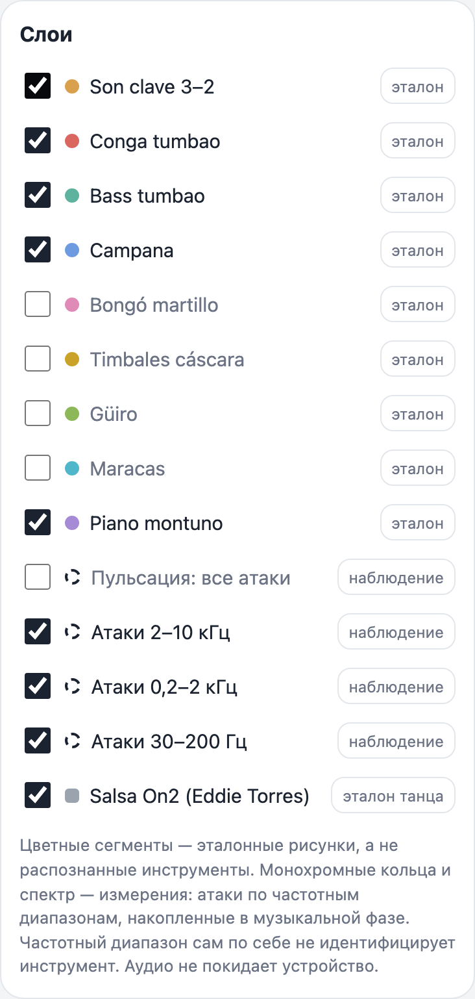
Карточки
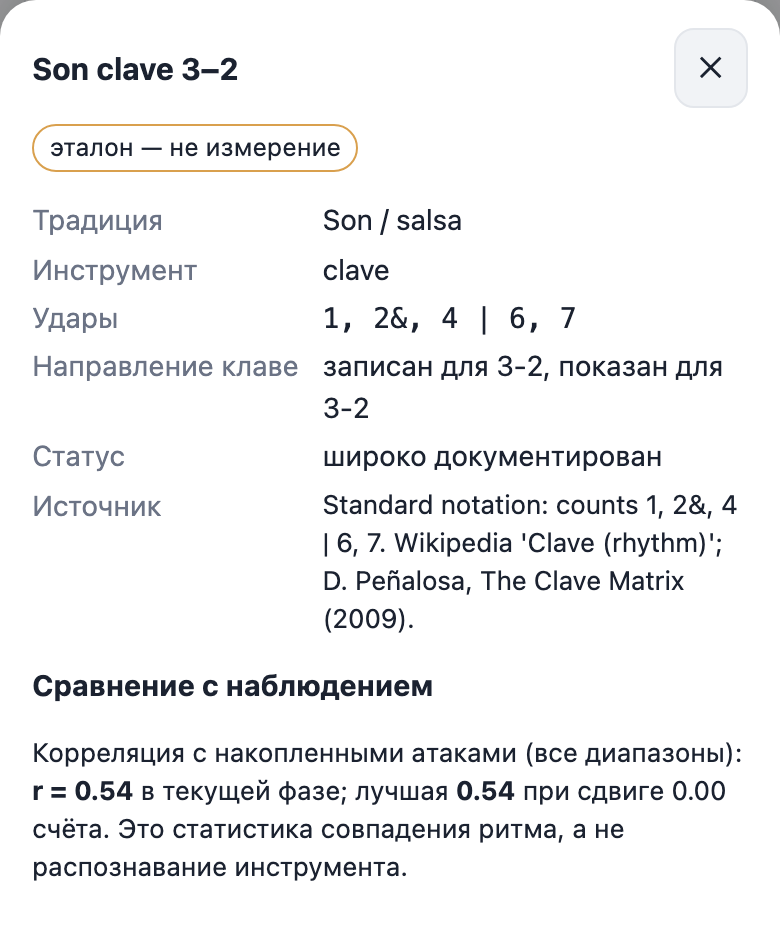
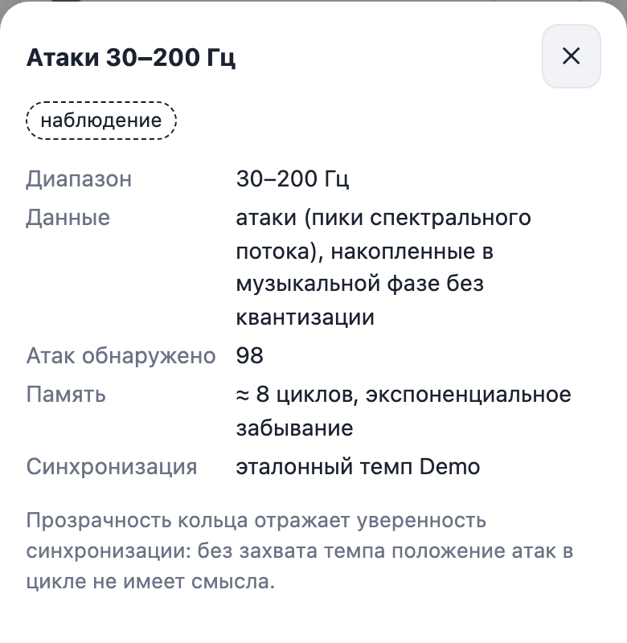
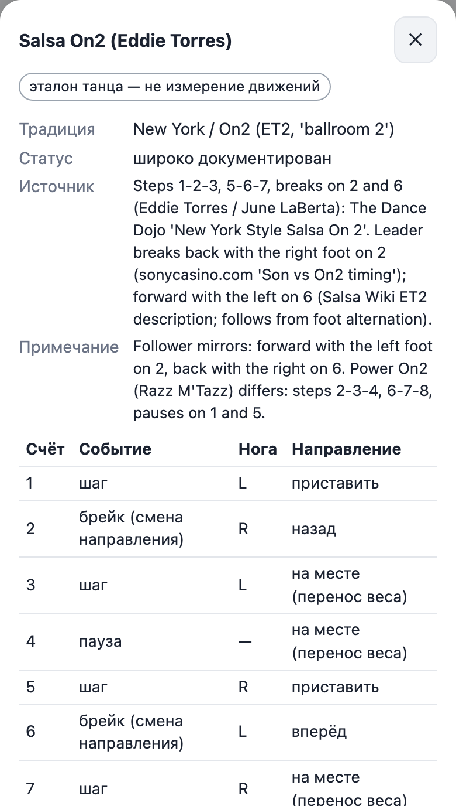
Сравнение с наблюдением
В карточке эталона показана корреляция рисунка с накопленными атаками (от −1 до 1):
- r в текущей фазе — насколько эталон совпадает с услышанным при нынешнем положении «1»;
- лучшее r и сдвиг — при каком повороте совпадение максимально.
Если лучшее совпадение заметно выше текущего, а сдвиг близок к целому числу счетов (например, 1,00), «1» скорее всего стоит не там. Поверните циферблат на этот сдвиг кнопкой Здесь «1» или кнопками ¼.
7.Полярная спектрограмма
Переключите вид на Спектр.
Идея
Обычная сонограмма показывает время по горизонтали и частоту по вертикали. Здесь сонограмма одной восьмёрки сворачивается в круг: угол — фаза внутри восьмёрки, радиус — частота.
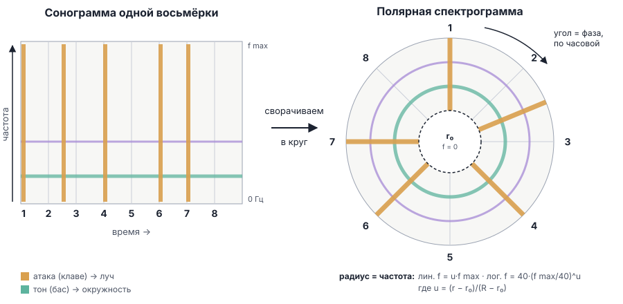
- Атаки (клаве, слэп конги) — короткие широкополосные звуки; они дают радиальные лучи в своей фазе.
- Тянущиеся тона (бас, аккорды) дают дуги и окружности на своей частоте.
- Каждая новая восьмёрка ложится на ту же картинку, а старые постепенно гаснут (экспоненциальное забывание). Повторяющийся рисунок проступает ярче, случайные звуки размываются.
Вокруг спектрограммы два тонких кольца-ориентира: эталон клаве и наблюдаемые атаки (отключаются в настройках).
Три режима накопления
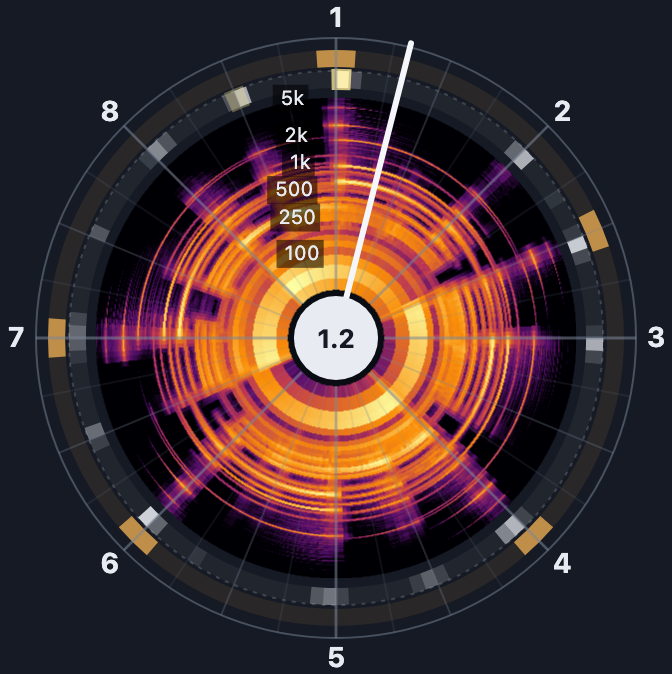
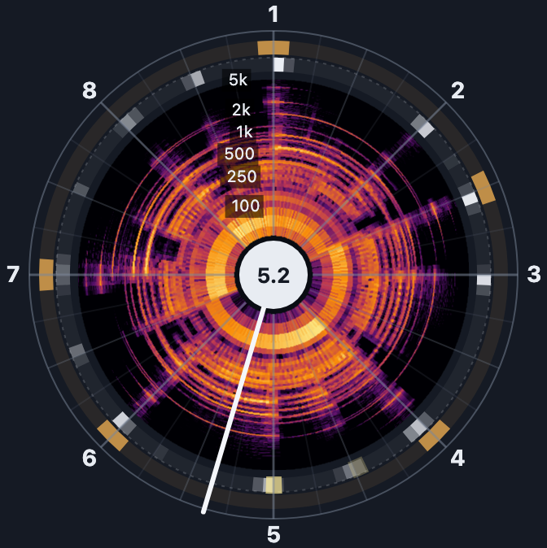
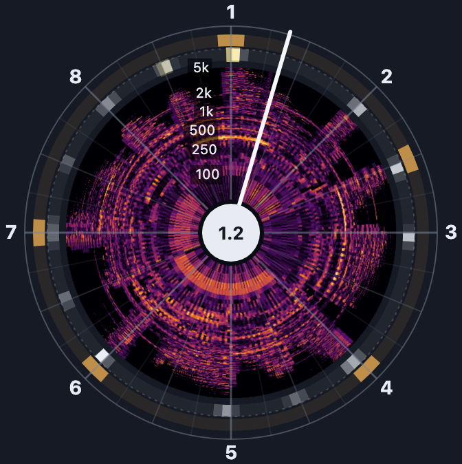
Снимки сделаны на Demo с временными отклонениями 10 мс — как у живого музыканта.
- Мощность (по умолчанию). Усредняется энергия звука в одной и той же фазе восьмёрки. Показывает, что и где звучит, устойчиво к живой игре. Это основной режим.
- Когерентное. Усредняется сама форма звуковой волны, а не только её энергия. Остаётся лишь то, что повторяется из восьмёрки в восьмёрку в точности так же; всё «гуляющее» гасит само себя. Для живой игры картинка тусклее, чем «Мощность», для секвенсора, лупа или сэмпла — почти такая же.
- Когерентность. Отношение двух предыдущих режимов, от 0 до 1. Жёлтый — звук повторяется идентично, фиолетовый и тёмный — каждый раз по-разному. На снимке устойчивые атаки когерентны, а гармоники баса и пианино, сдвинутые микротаймингом, — нет.
«Мощность» — некогерентное фазо-синхронное усреднение |X|². «Когерентное» — комплексное усреднение X с компенсацией дробного сдвига кадра. «Когерентность» — |ΣX|² / Σ|X|². Кадры FFT берутся точно в фазовых позициях цикла (256 позиций на оборот). Все три величины считаются одновременно, переключатель меняет только отображение. Подробнее — в ARCHITECTURE.md, раздел «Накопление».
Шкала частот и начало оси
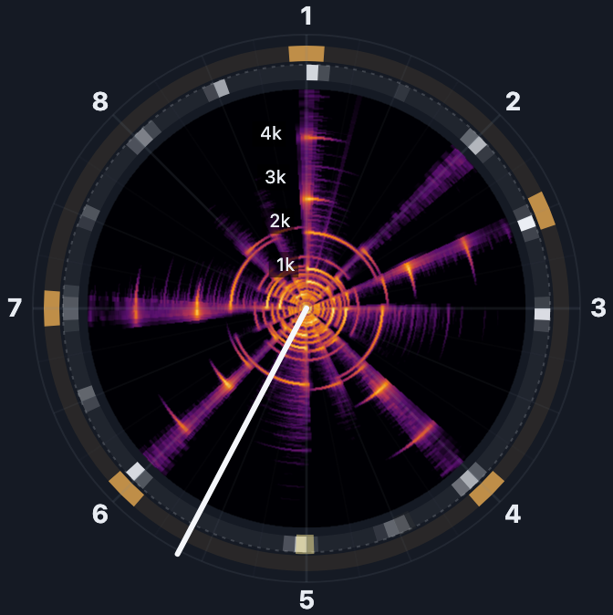
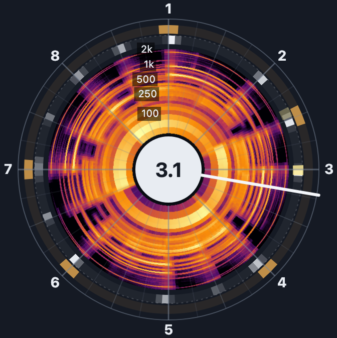
| Параметр | Что делает |
|---|---|
| Линейная шкала | Одинаковые расстояния по радиусу означают одинаковое число герц. Хорошо видны высокочастотные атаки, басовая область сжата у центра. |
| Логарифмическая шкала | Одинаковые расстояния означают одинаковые музыкальные интервалы (октавы). Бас, аккорды и мелодия занимают сопоставимое место. Начинается с 40 Гц. |
| Начало оси частот (r₀) | Нулевая частота (на лог-шкале — 40 Гц) начинается не в центре круга, а на заданном радиусе: 0, 10, 20 или 30%. Низкие частоты не сжимаются в точку, а внутри остаётся место для счёта. |
| Верхняя частота | 2, 5 или 10 кГц. Смена пересоздаёт картинку; она заполняется заново за один оборот. |
| Динамический диапазон | 40, 60 или 80 дБ — сколько тихих деталей показывать относительно самого громкого места. |
Подписи частот стоят вдоль луча чуть левее «1».
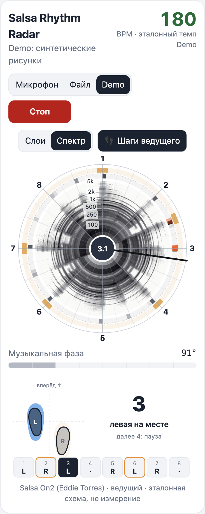
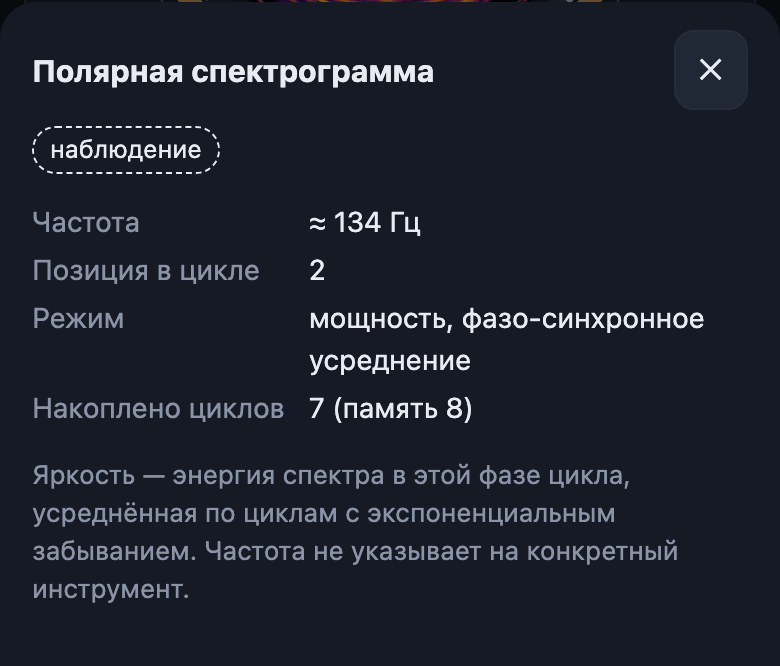
Память и сброс
- Накопление наблюдений — сколько восьмёрок помнит радар: «Мгновенно» (только последняя), 4, 8, 16 или 32. Больше память — чище устойчивый рисунок, но медленнее реакция на изменения.
- Накопленная картинка следует за часами. Приложение хранит не саму картинку, а «ленту» — историю звука за последние до 90 секунд — и несколько раз в секунду заново сворачивает её текущим темпом и фазой. Когда темп уточняется, «1» сдвигается или меняется длина цикла, картинка плавно сжимается, растягивается и поворачивается, а не стирается. Если музыка действительно сменила темп, старая часть ленты сначала размоется и постепенно уступит место новой.
- Сбросить накопление — очистить ленту, спектрограмму и кольца наблюдения.
- Тишина (тише −80 дБFS) не накапливается: пауза в музыке не стирает выученный рисунок.
- Сразу после старта у «1» может остаться полоса пониженной когерентности: первая восьмёрка началась с тишины и отличается от следующих. Полоса гаснет за несколько восьмёрок.
8.Настройки
Ритм и танец
| Клаве | Son или Rumba; 3–2 или 2–3. Рисунки, зависящие от клаве (каскара, колокол, монтуно), поворачиваются вместе с выбором. |
| Танцевальная схема | Salsa On2 (Eddie Torres) — по умолчанию, Salsa On1, Casino, Son (contratiempo). |
| Начало восьмёрки | Автоматически искать «1» по рисунку сальсы (включено по умолчанию). |
| Накопление наблюдений | Мгновенно / 4 / 8 / 16 / 32 восьмёрки. |
| Подстройка фазы | Плавная коррекция стрелки по найденным долям (режим Авто). |
Полярная спектрограмма
Режим накопления, шкала частот, r₀, верхняя частота, динамический диапазон, кольца-ориентиры, кнопка сброса — см. раздел 7.
Demo
| Темп | 80–240 BPM |
| Временные отклонения | Случайный сдвиг каждого удара, 0–25 мс (стандартное отклонение) |
| Пропущенные удары | Доля случайно выпавших ударов, 0–40% |
| Шум | Белый шум −40 / −30 / −20 дБ |
| Громкость | Громкость Demo |
Интерфейс
Тема (авто / светлая / тёмная) и полноэкранный режим. Настройки сохраняются в браузере и восстанавливаются при следующем запуске.
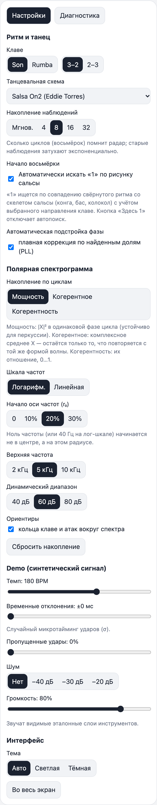
9.Диагностика
Раздел для тех, кто хочет понимать, насколько можно доверять тому, что показано.
Аудио
- Частота дискретизации, задержки — параметры звуковой системы устройства.
- Нагрузка анализа — доля реального времени, которую занимает анализ (обычно около 1%).
- RMS — общий уровень сигнала.
- Энергия по диапазонам — низ, середина и верх в дБ.
- Атак — сколько атак найдено в каждом диапазоне.
Темп и фаза
- Часы — кто ведёт стрелку (
auto,manual,reference), темп и поворот «1». - Трекер — найден ли темп и какой. Трекер работает всегда, даже когда стрелку ведёт эталон или ручной режим.
- Уверенность — словесный уровень (надёжно / вероятно / неуверенно / нет ритма).
- Чёткость ритма — во сколько раз свёрнутый по восьмёркам ритм чётче шума: 1 — ритма нет, 6 и больше — надёжно.
- Отрыв от 2-й гипотезы — во сколько раз лучшая гипотеза темпа сильнее следующей: около 1 — неоднозначно, 1,6 и больше — надёжно.
- Гипотезы темпа — найденные темпы с чёткостью. Например, «180 (×21), 120 (×9)»: 120 — прочтение тресильо, заметно слабее.
- Фаза долей — «по рисунку сальсы» или нейтральной «гребёнкой долей», и во сколько раз доля сильнее «и».
- Сходство с сальсой — корреляция свёрнутого рисунка со скелетом сальсы; шаблон используется при r ≥ 0,35.
- «1» — найдена автоматически, задана вручную или автопоиск выключен.
- Ошибка фазы / BPM против эталона (только Demo в режиме «Эталон») — насколько автоматический анализ расходится с истиной. Хороший результат — единицы миллисекунд.
Накопление
Число накопленных восьмёрок, размер сетки спектрограммы, версия алгоритма.
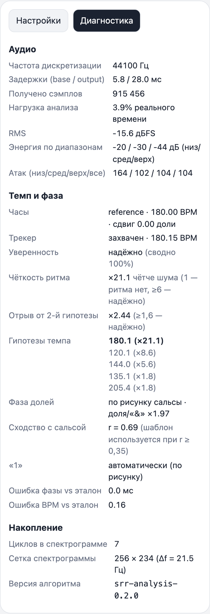
10.Установка на телефон, темы, полный экран
- Установка. Откройте приложение по HTTPS в Chrome (Android) или Safari (iOS) и выберите «Добавить на главный экран» / «Установить приложение». Оно откроется без адресной строки.
- Офлайн. После первой загрузки по сети приложение работает без интернета (кроме режима «Файл», если файл лежит в облаке).
- Тема. В настройках — авто (как в системе), светлая или тёмная.
- Полный экран. Кнопка «Во весь экран» в настройках.
11.Сценарии использования
💃 Танцору: услышать клаве и свой шаг
- Demo, включите только Clave и Танец, темп 140–160.
- Сравните удары клаве (3–2: 1, 2&, 4 | 6, 7) с шагами (On1: брейк на 1 и 5, паузы на 4 и 8).
- Переключите схему на On2: брейк уходит на 2 и 6.
- Переключите клаве на 2–3 и посмотрите, как меняется отношение ударов к шагам.
🎧 Танцору: найти «раз» в реальной песне
- Микрофон или Файл; подождите, пока темп будет найден.
- Слушайте и нажмите Здесь «1» на «раз».
- Откройте карточку Clave: если лучший сдвиг ≠ 0, «1» можно поправить.
🧑🏫 Преподавателю: полиритмия по слоям
- Demo, только Clave; затем добавляйте по одному: Conga, Bass, Campana, Piano.
- Каждый слой одновременно звучит и подсвечивается в момент удара.
- Режим 4 счёта показывает разницу «стороны 3» и «стороны 2».
🥁 Музыканту: проверить ровность игры
- Запишите партию на фоне метронома, загрузите в Файл.
- Вид Спектр, режим Когерентность, память 16–32.
- Жёлтое — удары, повторяемые очень точно; тёмное — то, что «гуляет».
- Для сравнения: Demo с отклонениями 5, 10, 20 мс.
🔬 Исследователю: проверить анализ
- Demo, синхронизация Авто, откройте Диагностику.
- Добавляйте отклонения, пропуски и шум; следите за ошибкой фазы и гипотезами темпа.
- Воспроизводимые метрики —
npm run bench, находки — в EXPERIMENTS.md.
12.Что приложение умеет и чего не умеет
✅ Умеет
- Находить темп сальсы примерно за 4 секунды (синтетика 140–220 BPM, включая клаве без других инструментов: ошибка ≤ 0,03 BPM, фаза ±2–5 мс).
- Находить «1» по рисунку сальсы.
- Плавно синхронизировать стрелку без скачков; накопленная картинка следует за темпом и не стирается.
- Показывать анимацию шагов ведущего (ET On2 и другие схемы).
- Показывать, где в восьмёрке и в каком диапазоне частот появляются атаки.
- Накапливать полярную спектрограмму по восьмёркам в трёх режимах.
- Сравнивать эталонный рисунок с накопленными атаками.
⏳ Пока не умеет
- Распознавать инструменты. Цветные кольца — эталоны, а не обнаруженные конга или клаве.
- Определять направление клаве (3–2 или 2–3) по записи.
- Компенсировать задержку микрофона — стрелка может отставать на 10–40 мс.
- Быстро следовать за резкой сменой темпа — новый темп принимается через 1,5–5 с, старая часть картинки какое-то время размыта.
- Записывать сессии и экспортировать данные, работать с датчиками движения (Salsa Motion Lab) — в плане.
13.Вопросы и неполадки
| Проблема | Что сделать |
|---|---|
| Ошибка доступа к микрофону | Разрешите микрофон в настройках сайта в браузере. Страница должна открываться по HTTPS (или с localhost). |
| Темп не находится | Посмотрите RMS в Диагностике: ниже −45 дБFS — сигнал слишком тихий. Попробуйте ближе к источнику или задайте темп через Tap. |
| Что значит «чёткость ×8» и «неуверенно» | Во сколько раз свёрнутый по восьмёркам ритм чётче случайного шума. Для сальсы с выраженной перкуссией типично ×8–20. При «неуверенно» (жёлтое число) проверьте уровень сигнала или задайте темп вручную. |
| Темп скачет между двумя значениями | Диагностика → Гипотезы темпа: близкие оценки означают неоднозначную музыку. Переключитесь на Вручную и задайте темп через Tap. |
| Кольца наблюдения почти прозрачные | Темп ещё не найден (режим Авто). Пока синхронизации нет, положение атак в восьмёрке не имеет смысла. |
| Спектрограмма после смены настроек частично пустая | Смена верхней частоты, длины цикла или темпа пересоздаёт накопление; картинка заполнится за один оборот. |
| Нет звука в Demo | Проверьте громкость устройства и Настройки → Demo → Громкость. В Demo звучат только включённые эталонные слои. |
| Тормозит на телефоне | Уменьшите верхнюю частоту спектрограммы до 2 кГц и отключите лишние слои. Если возможно, сообщите модель устройства. |